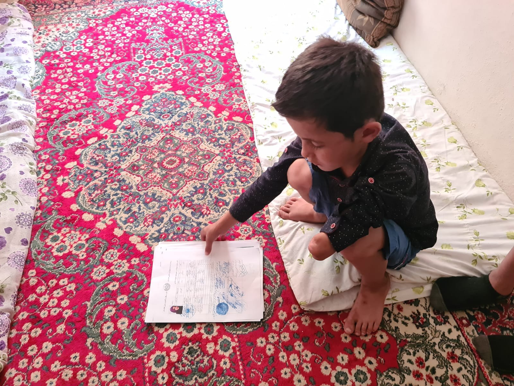

Afghanistan's Uzbeks and 2021: the Taliban's return, refugees, and crossings into Uzbekistan
In August 2021 the Taliban took power. The Uzbek community of northern Afghanistan, the flight of Abdul Rashid Dostum, and the crossing of Afghan military aircraft and soldiers over the Amu Darya to Termez — with verified dates and figures.

The Taliban's seizure of power in Afghanistan in August 2021 also triggered a new wave of displacement and flight for the country's Uzbek community. The Uzbeks of northern Afghanistan — living in the provinces bordering Uzbekistan and Turkmenistan — are a Turkic, mostly Sunni Muslim community with historic and cultural ties to Uzbekistan. There is no reliable census of their numbers: sources cite a share of roughly 3–10% (often given as about 9%). Their main regions are Faryab, Jowzjan, Sar-e Pol, Balkh (Mazar-i-Sharif) and Samangan (Source: Wikipedia — Uzbeks; Minority Rights Group — Uzbeks and Turkmens of Afghanistan).
2021: the withdrawal of US forces
In 2021 the process of withdrawing US and NATO forces from Afghanistan accelerated. The drawdown began on 1 May 2021; the US president set the completion date at 31 August 2021, and Bagram Airfield was vacated around 1–2 July 2021. Against this backdrop the Taliban captured provincial capitals one after another through the summer (Source: UK Parliament Library — Timeline of Taliban offensive; FactCheck.org — Timeline of U.S. withdrawal).
The fall of Mazar-i-Sharif and Kabul
The largest northern city — Mazar-i-Sharif, home to many Uzbeks — fell to the Taliban on 14 August 2021, alongside several other provincial capitals the same day. The next day — 15 August 2021 — the capital Kabul fell too; President Ashraf Ghani left the country that day (Source: Wikipedia — Fall of Mazar-i-Sharif; Wikipedia — Fall of Kabul (2021)).

Abdul Rashid Dostum
One of the most prominent political and military figures of Afghanistan's Uzbeks is the Jowzjan-born general Abdul Rashid Dostum. He has led the Junbish-i Milli party since 1992 and served as First Vice President of Afghanistan in 2014–2020. After Mazar-i-Sharif fell, he crossed into Uzbekistan via the Hairatan border in mid-August 2021 (around 11–14 August), and later went on to Turkey. At the time Uzbekistan's Foreign Ministry formally denied that he was in the country, which is why the date varies across sources (Source: Wikipedia — Abdul Rashid Dostum; RFE/RL, 2021).
Crossing the Amu Darya to Termez
The main border point was the Termez–Hairatan 'Friendship' Bridge over the Amu Darya. According to reports, on 14–15 August 2021 about 46 Afghan military aircraft — 22 planes and 24 helicopters — were forced to land at Termez airport; one aircraft crashed in Surkhandarya province in the process. The initial figure of '46' was later revised over certain inaccuracies, and independent satellite analyses give a slightly different count — so this number is approximate. Around 585 Afghan servicemembers arrived aboard the aircraft; officially, 84 Afghan soldiers were allowed to cross on 14 August, and on 15 August a further group of civilians and soldiers crossed the Amu Darya (Source: RFE/RL, 2021; CSIS — Afghan military aircraft land in Uzbekistan).
Termez as a transit point
Uzbekistan set up a temporary residential camp at Termez and allowed people to pass through only in transit to third countries (no asylum was granted). Verified figures indicate that the group of Afghan pilots and servicemembers (those aboard the 46 aircraft) were processed over about a month and flown out on three charter flights. Some reports say several hundred up to two thousand people transited via Termez, but these figures often rest on single accounts and are therefore approximate (Source: AFSA — Operation Allies Refuge; The Diplomat, 2021).
The Uzbek government's position
In 2021 Uzbekistan's Foreign Ministry stated that it would not accept Afghan refugees on its territory and would provide only strictly time-limited transit assistance, and it sealed the border after the change of power. Around 20 August, after Taliban assurances of no harm, about 150 Afghan citizens were returned (a step criticized by Human Rights Watch). President Shavkat Mirziyoyev called communication with the Taliban 'natural'; because the only railway to Mazar-i-Sharif runs through Uzbekistan, contacts on border and humanitarian matters were maintained (Source: The Diplomat, 2021; Human Rights Watch, 2021).
The link to the Soviet era
The northern exodus of 2021 echoes a repeatedly observed historical pattern of flight north from Afghanistan across the Amu Darya. During the Soviet–Afghan War (1979–1989) and the civil war that followed, Afghans — including northern Uzbeks — also moved into Central Asia; the larger flow into independent Uzbekistan, however, began mainly from 1992 (Source: Wikipedia — Soviet–Afghan War; IWPR, 2001).
Why this matters
The history of Afghanistan's Uzbeks is a part of the Central Asian Uzbek world beyond Uzbekistan's borders. The events of 2021 showed both a new ordeal for this community and how closely Uzbekistan's border is tied to northern Afghanistan. This article presents only verified dates and figures; where sources differ, the figures are marked as approximate.

Sources
- Wikipedia — Uzbeks
- Minority Rights Group — Uzbeks and Turkmens (Afghanistan)
- Wikipedia — Fall of Mazar-i-Sharif
- Wikipedia — Fall of Kabul (2021)
- Wikipedia — Abdul Rashid Dostum
- RFE/RL — Afghanistan, the Taliban, and Central Asia (2021)
- CSIS — Afghan Military Aircraft Land in Uzbekistan
- Human Rights Watch — Uzbekistan Should Do More to Help Afghans (2021)